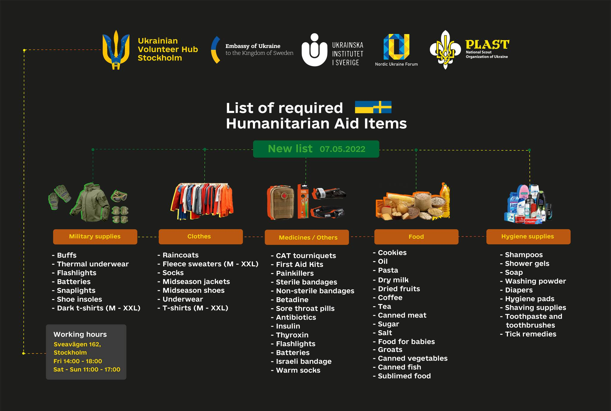

Ukrainian Volunteer Hub - Stockholm
@uavhub.stockholm ·Неприбуткова
організація
English The Ukrainian cities, towns and villages at the frontlines
are in the dire humanitarian conditions. Russia has committed war
crimes against Ukrainian peaceful civilians and had devastating
impact on the Ukrainian infrastructure. People do not have access to
food, clean water and medical help. Every week we send trucks to
Ukraine where the supplies are distributed to Kyiv, Mykolaiv, Sumy
and Kharkiv regions. Most required are food, medical supplies,
clothes and hygienic products.
We collect donations at
Sveavägen 162, 113 46, Stockholm on Fridays (2pm - 6pm) and on Saturdays (11am - 5pm).
More detailed list of the required supplies is below. For monetary donations the
account is below.
This is the account of Ukrainian Institute of
Sweden, more information here: https://ukrainskainstitutet.se/. We
also closely cooperate with Nordic Ukraine Forum and Embassy of
Ukraine in Sweden / Посольство України в Швеції
Recepient: Ukrainian
Institute of Sweden Bank: Swedbank Bankgiro: 109-9316 Swish number:
1230988212 Message: UAaid IBAN: SE5480000832799249918781 BIC:
SWEDSESS
